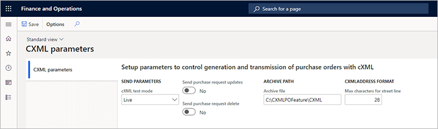
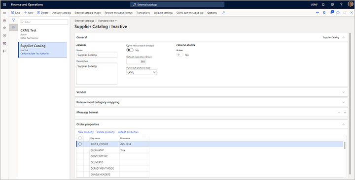
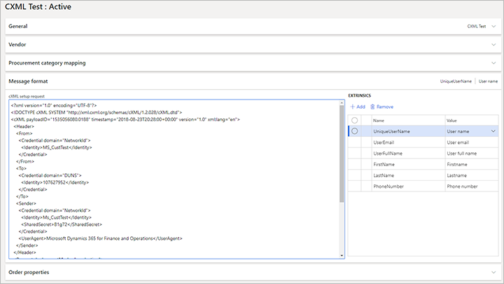
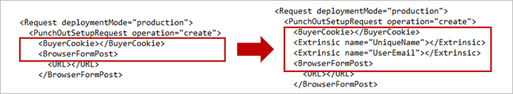
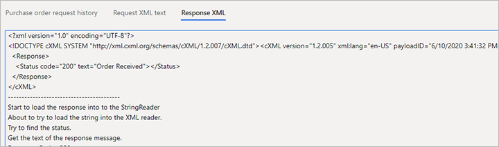

Einkaufen von cXML-Erweiterungen
Important
Dynamics 365 for Finance and Operations hat sich zu speziell entwickelten Anwendungen entwickelt, mit denen Sie bestimmte Geschäftsfunktionen verwalten können. Weitere Informationen zu diesen Änderungen finden Sie im Dynamics 365-Lizenzierungshandbuch.
Die Funktion Einkaufen von cXML-Erweiterungen baut auf der vorhandenen externen Katalogfunktion PunchOut auf, die für Bestellanforderungen verwendet wird. Diese vorhandene Funktionalität ist bekannt als PunchOut. Obwohl eine Bestellung nicht aus einer Bestellanforderung stammen muss, muss eine Verbindung zwischen dem Lieferanten auf einer Bestellung und den Parametern bestehen, die zum Senden des Bestelldokuments verwendet werden.
Aktivieren Sie die Funktion „Einkaufen von cXML-Erweiterungen“
Öffnen Sie zum Aktivieren der Funktion die Funktionsverwaltung-Seite und suchen Sie nach der Funktion namens Einkaufen von cXML-Erweiterungen. Wählen Sie die Funktion aus, und wählen Sie dann Jetzt Aktivieren aus, um sie zu aktivieren.
Nachdem Sie die Funktion aktiviert haben, sollten Sie die Einstellungen in den folgenden drei Bereichen konfigurieren:
- cXML-Parameter – Verwenden Sie diese Einstellungen, um einige globale Parameter für die Funktionalität zum Senden von Bestellungen einzurichten.
- Lieferanteneinstellungen – Wenn standardmäßig „Commerce eXtensible Markup Language (cXML)“ für alle neuen Bestellungen verwendet werden soll, die für einen beliebigen Lieferanten erstellt wurden, legen Sie die Option Bestellung per cXML senden für diesen Lieferanten auf Ja fest.
- Externe Kataloge – Verwenden Sie die neue Bestelleigenschaften-Einstellungen, um das Format des Bestelldokuments und dessen Versand zu definieren.
Die folgende Abbildung fasst diese Konfiguration zusammen.
Außerdem müssen Sie Batch-Auftrag für Bestellanforderungen einrichten. Dieser Batch-Auftrag wird verwendet, um die bestätigten Bestellungen zu senden.
Einrichten globaler cXML-Parameter
Verwenden Sie die Seite cXML-Parameter, um einige globale Einstellungen vorzunehmen, die für die Funktionalität zum Senden von Bestellungen gelten.

Gehen Sie zu Beschaffung > Konfiguration > cXML-Verwaltung > cXML-Parameter und stellen Sie die folgenden Parameter ein:
cXML-Testmodus – Dieser globale Parameter wirkt sich auf die Art und Weise aus, wie Bestellungen physisch vom Batch-Auftrag gesendet werden. Wählen Sie einen der folgenden Werte aus:
- Test – In diesem Modus kann der Batch-Auftrag ausgeführt werden und das XML-Dokument für die Nachricht wird generiert, aber nicht gesendet. Stattdessen wird es zu Überprüfungszwecken in der Bestellanforderung gespeichert. Dieser Modus ist hilfreich, wenn Sie sich in einer ersten Implementierung befinden und sehen möchten, wie Daten in die cXML-Nachricht eingegeben werden. Möglicherweise möchten Sie auch Beispielnachrichten generieren, die Sie zur Erstvalidierung an Lieferanten senden können.
- Live – In diesem Modus verwendet die Funktion die externen Katalogeinstellungen, um jedes Dokument physisch an den Lieferanten zu übertragen.
Aktualisierungen der Kaufanforderung senden – Legen Sie diese Option auf Ja fest, um eine Aktualisierungsnachricht für Bestellungen zu senden. Legen Sie sie auf Nein fest, um zu verhindern, dass die Nachricht gesendet wird. Die meisten Lieferanten ziehen es vor, keine Aktualisierungsnachrichten zu erhalten. Stattdessen müssen Kunden sie per Telefon oder E-Mail kontaktieren, wenn eine Bestellung geändert werden soll. Dieser Parameter ist ein globaler Parameter, und im externen Katalog kann keine Überschreibung für jeden Lieferanten angegeben werden. Eine Bestellung wird als aktualisiert markiert, wenn Sie eine zweite Bestätigung auf einer Bestellung buchen, die erste Bestätigung jedoch bereits vom Lieferanten gesendet und bestätigt wurde. Wenn eine zweite Bestätigung vorliegt, die erste jedoch nicht gesendet wurde, wird die zweite Bestätigung als neues Dokument behandelt. Sie können eine Bestellung so oft bestätigen, wie Sie möchten, bis eine Bestätigung gesendet wird. Die nächste Bestätigung wird dann als Aktualisierungsnachricht behandelt.
Löschung der Kaufanforderung senden – Legen Sie diese Option auf Ja fest, um eine Löschungsnachricht für Bestellungen zu senden. Legen Sie sie auf Nein fest, um zu verhindern, dass die Nachricht gesendet wird. Die meisten Lieferanten ziehen es vor, keine Löschungsnachrichten zu erhalten. Stattdessen müssen Kunden sie per Telefon oder E-Mail kontaktieren, wenn eine Bestellung versehentlich gesendet wurde. Dieser Parameter ist ein globaler Parameter, und im externen Katalog kann keine Überschreibung für jeden Lieferanten angegeben werden. Eine Bestellung wird als gelöscht markiert, wenn Sie die Bestellung im Supply Chain Management stornieren.
Archivdatei – Geben Sie den Dateipfad an, in den Sie archivierte cXML-Dokumente exportieren und speichern möchten. Der Pfad wird verwendet, wenn Sie die Bereinigungsfunktion der Bestellanforderung-Seite ausführen.
Maximale Zeichen für die Straßenzeile – Geben Sie die maximale Anzahl von Zeichen ein, die im Straßenfeld für Adressen im cXML-Dokument verwendet werden können. Dieser globale Parameter wirkt sich auf alle Lieferanten aus, sofern in den Eigenschaften des externen Katalogs keine Überschreibung angegeben ist.
Richten Sie Lieferantenbestellungen für die Verwendung von cXML ein
Jedes Mal, wenn Sie eine Bestellung bestätigen, bei der die Bestellung per cXML senden-Option ist auf Ja festgelegt ist, generiert das System die cXML-Nachricht automatisch und stellt sie dem Lieferanten zu, der dieser Bestellung zugeordnet ist. Es gibt zwei Möglichkeiten, diese Option für Ihre Bestellungen zu steuern:
- Um einen Lieferanten so einzurichten, dass er automatisch cXML für alle neuen Bestellungen verwendet, die aus einer Bestellanforderung erstellt werden, gehen Sie zu Beschaffung > Lieferanten > Alle Lieferanten und wählen sie einen aus oder erstellen Sie einen Lieferanten, um dessen Detailseite zu öffnen. Legen Sie dann auf dem Inforegister Standardwerte für Bestellungen die Bestellung per cXML senden-Option auf Ja fest. Wenn cXML auch automatisch für neue Bestellungen verwendet werden soll, die nicht aus einer Bestellanforderung erstellt wurden, müssen Sie auch die ENABLEMANUALPO-Bestelleigenschaft für den zugehörigen externen Katalog auf Wahr festlegen, wie im Auftragseigenschaften festlegen-Abschnitt weiter unten in diesem Thema beschrieben.
- Für einzelne Bestellungen gehen Sie zu Beschaffung > Bestellungen >Alle Bestellungen und wählen Sie eine Bestellung aus oder erstellen Sie eine, um die Detailseite zu öffnen. Wechseln Sie zur Kopfzeile-Ansicht und legen Sie dann auf dem Inforegister Einrichtung die Bestellung per cXML senden-Option nach Bedarf fest.
Einrichten eines externen Katalogs zur Verwendung von cXML
Auf der Externe Kataloge Seite können Sie für jeden Ihrer Kataloge die PunchOut-Funktionalität und die Funktionalität zum Senden von Bestellungen einrichten. Um die relevanten Einstellungen zu finden, gehen Sie zu Beschaffung > Kataloge > Externe Kataloge. Beginnen Sie mit dem Einrichten jedes Katalogs wie gewohnt. Dieser Prozess umfasst das Zuweisen eines Lieferanten, das Auswählen der Kategorien, die der Lieferant liefern darf, und das Aktivieren des Katalogs. Konfigurieren Sie dann die zusätzlichen Einstellungen, die in diesem Abschnitt beschrieben werden.
Note
Wenn Sie eine Bestellung bestätigen, die über cXML gesendet werden kann, sucht das System den Lieferanten, der der Bestellung zugeordnet ist, und findet dann den ersten aktiven externen Katalog, der diesem Lieferanten zugeordnet ist. Das System verwendet dann die Einstellungen aus diesem externen Katalog, um die Bestellung zu senden. Wenn mehrere externe Kataloge eingerichtet sind, verwendet das System nur den ersten externen Katalog, den es findet, basierend auf dem Lieferanten in der Bestellung. Daher empfehlen wir, dass Sie für jeden Lieferanten nur einen externen Katalog erstellen.

Legen Sie den PunchOut-Protokolltyp fest
Legen Sie auf dem Inforegister Allgemeines der Externe Kataloge-Seite das Punchout-Protokolltyp-Feld auf cXML fest. Diese Option ist die einzige verfügbare Option, es sei denn, ein Partner hat die Funktionalität erweitert und bietet eine zusätzliche Option in der Erweiterung.
Wenn Sie auch den Katalog für PunchOut verwenden, müssen Sie auch das Nachrichtenformat einrichten. Das Nachrichtenformat wird verwendet, um die Verbindung zum Lieferanten in der PunchOut-Transaktion aus der Anforderung herzustellen. Wenn eine Bestellung gesendet wird, werden die Bestellungseigenschaften verwendet, um die Verbindung mit einem Lieferanten herzustellen.
Legen Sie die Eigenschaften fest
Die Einkaufen von cXML-Erweiterungen-Funktion fügt ein neues Inforegister Bestelleigenschaften für externe Kataloge hinzu. Dieses Inforegister bietet ein Raster, in dem Sie die Auftragseigenschaften definieren können. Es bietet auch eine Symbolleiste. Diese Symbolleiste enthält die folgenden drei Schaltflächen, mit denen Sie die Auftragseigenschaften verwalten können:
- Standardeigenschaften – Wenn Sie einen neuen Katalog einrichten, wählen Sie diese Schaltfläche, um dem Raster eine vordefinierte Sammlung häufig verwendeter Eigenschaften hinzuzufügen.
- Neu – Fügen Sie dem Raster eine neue Eigenschaft hinzu.
- Löschen – Löschen Sie die aktuell ausgewählte Eigenschaft aus dem Raster. Wenn Sie versehentlich eine Standardeigenschaft löschen, wählen Sie Standardeigenschaften, um alle fehlenden Eigenschaften wiederherzustellen.
Verwenden Sie jedes Mal, wenn Sie dem Raster eine oder mehrere Eigenschaften hinzufügen, die rechte Spalte, um jeweils einen Wert anzugeben.
Verwenden Sie die Standardeigenschaften wie folgt:
BUYER_COOKIE – In diesem Verfolgungsfeld können Sie spezifische Informationen für Ihr Unternehmen angeben. Sofern Sie mit dem Verkäufer keine Vereinbarung über die Verwendung dieser Eigenschaft getroffen haben, hat dies beim Senden einer Bestellung keine große Bedeutung. Daher sollten Sie einen einfachen Wert festlegen.
DELIVERTO – Wenn die Lieferadresse aus der Bestellung in das Dokument eingegeben wird, wird das Empfängerinformationen-Feld verwendet, um das DeliverTo-Feld in der XML-Nachricht festzulegen. Wenn Sie möchten, dass dieser Wert der Name einer anfordernden Person ist und Sie das Feld „Anfordernde Person“ im Bestellkopf festlegen, geben Sie den Wert REQUESTER für diese Eigenschaft ein, sodass der Name der anfordernden Person in das Feld DeliverTo in der XML eingegeben wird. In diesem Fall stammen die primäre E-Mail-Adresse und die Telefonnummer, die verwendet werden, von der anfordernden Person statt vom Besteller.
DEPLOYMENTMODE – Legen Sie diese Eigenschaft gemäß den Anforderungen des Lieferanten fest. Die Werte sind normalerweise PRODUCTION oder TEST. Legen Sie den Wert basierend auf Ihrer Kommunikation mit dem Lieferanten fest. Normalerweise muss er mit dem beabsichtigten System hinter dem ORDERCHECKURL-Wert übereinstimmen, den der Lieferant als Test- oder Produktionssystem angibt.
FIXEDBILLADDRESSID – Wenn das Feld addressID in der XML-Nachricht festgelegt ist, wird der in der Adresse angegebene Ort abgerufen. Wenn der ID-Wert, den Sie dem Lieferanten mitgeteilt haben, aus irgendeinem Grund vom Wert an der Adresse abweicht, können Sie eine Überschreibung erzwingen, indem Sie hier den Wert angeben. Es wird davon ausgegangen, dass Sie beim Lieferanten nur eine Adresse verwenden und dass die Adresse im System des Lieferanten eingerichtet ist. Die Rechnungsadresse ist die primäre Rechnungsadresse, die für die juristische Person im Supply Chain Management angegeben ist.
FIXEDSHIPADDRESSID – Wenn das Feld addressID in der XML-Nachricht festgelegt ist, wird der in der Adresse angegebene Ort abgerufen. Wenn der ID-Wert, den Sie dem Lieferanten mitgeteilt haben, aus irgendeinem Grund vom Wert an der Adresse abweicht, können Sie eine Überschreibung erzwingen, indem Sie hier den Wert angeben. Es wird davon ausgegangen, dass Sie beim Lieferanten nur eine Adresse verwenden und dass die Adresse im System des Lieferanten eingerichtet ist. Die Lieferadresse ist die Adresse, die in der Kopfzeile der Bestellung angegeben ist. Die meisten Lieferanten akzeptieren nur Kopfzeilenadressen, keine Zeilenadressen. Obwohl es im XML Felder für Zeilenadressen gibt, werden diese auf die Kopfadresse festgelegt.
FROM_DOMAIN – Geben Sie den Wert ein, der zum Senden von Bestelldokumenten verwendet wird. Dieser Wert wird von Ihrem Lieferanten bereitgestellt.
FROM_IDENTITY – Geben Sie den Wert ein, der zum Senden von Bestelldokumenten verwendet wird. Dieser Wert wird von Ihrem Lieferanten bereitgestellt.
ORDERCHECKURL – Geben Sie die URL ein, an die die Bestelldokumente gesendet werden sollen. Diese URL beginnt mit
https://und wird von Ihrem Lieferanten geliefert.PAYLOAD_ID – Geben Sie einen Präfixwert für die Nutzlast-ID ein, der für die Geschäftsprozesse erforderlich ist, die für den aktuellen Lieferanten vorhanden sind.
SENDER_DOMAIN – Geben Sie den Wert ein, der zum Senden von Bestelldokumenten verwendet wird. Dieser Wert wird von Ihrem Lieferanten bereitgestellt.
SENDER_IDENTITY – Geben Sie den Wert ein, der zum Senden von Bestelldokumenten verwendet wird. Dieser Wert wird von Ihrem Lieferanten bereitgestellt.
SHARED_SECRET – Geben Sie den Wert ein, der zum Senden von Bestelldokumenten verwendet wird. Dieser Wert wird von Ihrem Lieferanten bereitgestellt.
STREETLENGTH – Geben Sie eine Zahl ein, die die maximale Anzahl von Zeichen darstellt, die der Lieferant als Straßenname akzeptiert. Wenn hier ein Wert eingegeben wird, überschreibt er den auf der Seite cXML-Parameter angegebenen Wert. Das System entfernt Zeilenumbrüche und Leerzeichen, um zu versuchen, die Standardadresse in Supply Chain Management an die hier angegebene Anzahl von Zeichen anzupassen. Alle zusätzlichen Zeichen werden abgeschnitten.
TO_DOMAIN – Geben Sie den Wert ein, der zum Senden von Bestelldokumenten verwendet wird. Dieser Wert wird von Ihrem Lieferanten bereitgestellt.
TO_IDENTITY – Geben Sie den Wert ein, der zum Senden von Bestelldokumenten verwendet wird. Dieser Wert wird von Ihrem Lieferanten bereitgestellt.
USERAGENT – Geben Sie einen Wert ein, um das von Ihnen verwendete System zu identifizieren. Geben Sie beispielsweise Dynamics 365 Supply Chain Management ein.
VERSION – Geben Sie eine cXML-Versionsnummer ein, wenn der Lieferant diese Informationen anfordert. Der Standardversion ist 1.2.008. Diese Version ist stabil und wird von den meisten Lieferanten akzeptiert.
RESPONSETEXT – Geben Sie einen beliebigen angepassten Text ein, den der Lieferant in der cXML-Antwortnachricht zurückgeben soll, nachdem die Bestellung gesendet wurde. Auf diese Weise kann das System die Nachricht als Anerkannt markieren. Wenn die Antwort nicht mit dem Standardtext oder dem Kundentext übereinstimmt, den Sie hier eingeben, wird die Anfrage als Fehler markiert.
RESPONSETEXTSUB – Legen Sie diese Eigenschaft auf TRUE fest, wenn Sie den Antworttext des Lieferanten nach den Werten durchsuchen möchten, die im Feld RESPONSETEXT angegeben sind. Beispielsweise gibt der Lieferant möglicherweise eine lange Zeichenfolge zurück, die in der Antwort „OK“ enthält. In diesem Fall können Sie OK im RESPONSETEXT-Feld eingeben und RESPONSETESTSUB auf TRUE festlegen, um irgendwo in der Antwort nach „OK“ zu suchen. Die Bestellung kann dann auf Anerkannt festgelegt werden.
CONTENTTYPE – In einer typischen Katalogeinrichtung müssen Sie diese Eigenschaft nicht festlegen. Wenn Sie beim Senden einer Bestellung einen Server-500-Fehler vom System eines Lieferanten erhalten, können Sie Tests durchführen, indem Sie diese Eigenschaft auf FALSE festlegen. Dieser Wert ändert eine Einstellung in der Webanforderung und ermöglicht bei einigen Plattformen möglicherweise das Senden der Nachricht.
ENABLEHEADERS – Legen Sie diese Eigenschaft auf TRUE fest, um Kopfzeilen zusammen mit der Bestellung zu senden. Sie müssen diese Eigenschaft nur festlegen, wenn der Lieferant dies benötigt. Wenn Sie diese Eigenschaft auf TRUE festlegen, fügen Sie zusätzliche benutzerdefinierte Eigenschaften hinzu, die auf den vom Lieferanten angegebenen Namen basieren, und stellen ihnen das Präfix H_ voran. Typische Beispiele sind H._USERID, H._PASSWORD, H._RECEIVERID, und H._ACTIONREQUEST. Die folgenden benutzerdefinierten Eigenschaften sind in den Standardeigenschaften enthalten:
- H._USERID – Wenn der Handelspartner verlangt, dass Sie eine Benutzer-ID als Teil der URL senden, um eine Bestellung einzureichen, geben Sie hier den Wert ein.
- H._PASSWORD – Wenn der Handelspartner verlangt, dass Sie ein Kennwort als Teil der URL senden, um eine Bestellung einzureichen, geben Sie hier den Wert ein.
ENABLEMANUALPO – Wenn diese Eigenschaft auf TRUE festgelegt ist, wenn Benutzer Bestellungen manuell erstellen (d.h. wenn sie nicht von einer Bestellanforderung ausgehen), erben diese Bestellungen die Einstellung von der Bestellung per cXML senden-Option des Lieferanten. Wenn diese Eigenschaft nicht festgelegt ist oder wenn sie auf FALSE festgelegt ist, wird die Bestellung per cXML senden-Option im Bestellkopf nicht für manuell erstellte Bestellungen festgelegt. Für Bestellungen, die aus einer Bestellanforderung erstellt werden, wird die Einstellung der Bestellung per cXML senden-Option unabhängig von der Einstellung dieser Eigenschaft immer vom Lieferanten geerbt. Weitere Informationen finden Sie im Abschnitt Richten Sie Lieferantenbestellungen für die Verwendung von cXML ein weiter oben in diesem Thema.
PUNCHOUTPOONLY – Wenn diese Eigenschaft auf TURE festgelegt ist, werden nur Bestellanforderungspositionen festgelegt, die aus dem PunchOut-Prozess erstellt wurden, die Bestellung per cXML senden-Option im Bestellkopf festlegen. Außerdem muss der Bestellanforderungspositionstyp aller Positionen in der Bestellung Externer Katalogartikel sein. Andernfalls kann die cXML-Bestellung nicht erstellt werden.
PUNCHOUTSHIPTO – Wenn diese Eigenschaft auf TRUE festgelegt ist, wird die Standardadresse der juristischen Person der PunchOut-Einrichtungsanforderungsnachricht hinzugefügt, wenn der Benutzer einen externen Katalog öffnet. Diese Adresse wird als ShipTo-Adresse hinzugefügt. Lieferanten verwenden die ShipTo-Adresse, um die Preise basierend auf dem Unternehmensstandort anzuzeigen.
TRACEPUNCHOUT – Legen Sie diese Eigenschaft auf TURE fest, wenn Sie eine Fehlermeldung erhalten, wenn Sie versuchen, aus der Bestellanforderung zu einem externen Katalog zu navigieren. Trace-Informationen werden dann für die Meldungen PunchOutSetupRequest und PunchOutResponse ausgefüllt, die zwischen Supply Chain Management und dem Lieferantenstandort gesendet werden. Sie können diese Informationen auf der cXML-Warenkorb-Nachrichtenprotokoll-Seite, die Sie von der Externe Katalogeinrichtung-Seite öffnen können für den Lieferantenkatalog anzeigen, mit dem Sie Probleme haben. Sie sollten diese Eigenschaft nur bei der Fehlerbehebung auf TURE festlegen, da dadurch für jedes PunchOut ein hoher Leistungsaufwand für die Datenbank entsteht. Weitere Informationen finden Sie im Anzeigen des cXML-Warenkorb-Nachrichtenprotokolls für den PunchOut des externen Katalogs-Abschnitt weiter unten in diesem Thema.
REPLACENEWLINE – Legen Sie diese Eigenschaft auf TRUE fest, wenn Sie ein Problem haben, weil das System eines Lieferanten eine PunchOutResponse-Nachricht sendet, die Zeilenumbruchzeichen enthält (\n). Dieses Problem kann auftreten, wenn die Nachrichten des Lieferanten über Middleware oder einen Beschaffungshub analysiert werden. Wenn Sie ein Problem mit einer neuen Lieferanteneinrichtung haben, legen Sie die TRACEPUNCHOUT-Eigenschaft auf TURE fest, um die PunchOutResponse-Nachricht anzuzeigen und bestimmen Sie, ob die XML-Tags durch Zeilenumbrüche unterbrochen sind.
POCOMMENTS – Legen Sie diese Eigenschaft auf TRUE fest, wenn Sie möchten, dass das cXML-Dokument Notizen enthält, die der Bestellung in Supply Chain Management beigefügt sind. Der Anhangstext ist in den Kopfzeilenkommentaren in der Bestellnachricht enthalten. Weitere Informationen dazu, wie das System diese Anhänge auswählt und verarbeitet, finden Sie im Hinzufügen von Notizen zu einer Bestellung-Abschnitt weiter unten in diesem Thema.
VENDCOMMENTS – Legen Sie diese Eigenschaft auf TRUE fest, wenn Sie möchten, dass das cXML-Dokument Notizen enthält, die der Bestellung in Supply Chain Management beigefügt sind. Der Anhangstext ist in den Kopfzeilenkommentaren in der Bestellnachricht enthalten. Weitere Informationen dazu, wie das System diese Anhänge auswählt und verarbeitet, finden Sie im Hinzufügen von Notizen zu einer Bestellung-Abschnitt.
CLEANAMP – Legen Sie diese Eigenschaft auf TURE fest, wenn Sie eine Fehlermeldung erhalten, wenn Sie versuchen, einen PunchOut für einen Lieferanten durchzuführen, und die Rückgabe-URL des Lieferanten falsch codierte kaufmännische Und-Zeichen enthält (&).
PUNCHOUTTZ – Legen Sie diese Eigenschaft auf TURE fest, wenn der Lieferant, mit dem Sie zusammenarbeiten, den ISO 8601-Standard (International Organization for Standardization) verwendet, um eine spezifische Validierung des Datums/der Uhrzeit der PunchOut-Anforderungsnachricht durchzuführen. Supply Chain Management verwendet das Datum der koordinierten Weltzeit (UTC) in der PunchOutSetupRequest-Meldung. Daher wird dem Datums-/Uhrzeitformat +00: 00 hinzugefügt, wenn Sie diese Eigenschaft auf TURE festlegen.
WMSADDRESSID – Legen Sie diese Eigenschaft auf TRUE fest, um die Lagernummer im Bestellkopf als addressID-Wert in der ShipTo-Adresse für die Bestellanforderung zu verwenden, die an den Lieferanten gesendet wird. Wenn Sie einen Wert für die FIXEDSHIPADDRESSID-Eigenschaft festlegen, hat dieser Wert Vorrang vor diesem Wert. Daher sollten Sie die eine oder andere Eigenschaft verwenden, um den addressID-Wert in der ShipTo-Adresse für das Dokument festzulegen.
PUNCHOUTSHIPTOUSER – Diese Eigenschaft funktioniert mit der PUNCHOUTSHIPTO-Eigenschaft. Wenn PUNCHOUTSHIPTO auf TRUE festgelegt ist, wird die Adresse der juristischen Person abgerufen. Wenn PUNCHOUTSHIPTOUSER auf TRUE festgelegt ist, wird die primäre Adresse des PunchOut-Benutzers anstelle der Adresse der juristischen Person verwendet.
Aktivieren des externen Katalogs
Wenn Sie alle Eigenschaften eingerichtet und andere Einstellungen für Ihren externen Katalog konfiguriert haben, kehren Sie zum Inforegister Allgemein der Externe Kataloge-Seite zurück und stellen Sie die Aktiv-Option auf Ja.
Hinzufügen von Notizen zu einer Bestellung
Wie im Auftragseigenschaften festlegen-Abschnitt erwähnt wurde, wenn Sie möchten, dass Ihre gelieferte cXML Text aus Notizen enthalten soll, die an die entsprechenden Bestell- und/oder Lieferantendatensätze angehängt sind, können Sie die POCOMMENTS- und/oder VENDCOMMENTS-Eigenschaft in der externen Katalog-Einrichtung auf TRUE festlegen. In diesem Abschnitt erfahren Sie mehr darüber, wie das System diese Anhänge auswählt und verarbeitet, wenn Sie sie verwenden.
Um die Arten von Notizen festzulegen, nach denen das System suchen wird, gehen Sie zu Beschaffung > Konfiguration > Formulare > Formulareinrichtung. Dann legen Sie auf der Bestellung-Registerkarte das Einbeziehen der Dokumente vom Typ-Feld auf die Art der Notiz fest, die Sie einschließen möchten. Es werden nur Textnotizen aufgenommen, keine Dokumentanhänge.

Anhänge werden nur dann in eine Bestellung aufgenommen, wenn ihr Typ-Feld auf den Wert festgesetzt wird, den Sie im Feld Einbeziehen der Dokumente vom Typ auswählen, und wenn ihr Beschränkung-Feld auf Extern festgelegt ist. Um die Anhänge für eine Bestellung zu erstellen, anzuzeigen oder zu bearbeiten, gehen Sie zu Beschaffung > Alle Bestellungen, wählen eine Bestellung aus oder erstellen eine und wählen dann die Anhänge-Schaltfläche (Büroklammersymbol) in der oberen rechten Ecke aus.

Anzeigen des cXML-Einkaufskorb-Nachrichtenprotokolls für den externen Katalog PunchOut
Wenn Sie das Punchout-Protokolltyp-Feld für einen externen Katalog auf cXML festlegen, erfasst das System ein Nachrichtenprotokoll der Einkaufskörbe, die von Lieferanten zurückkehren. Dieses Protokoll kann zur Fehlerbehebung und für andere Datenzwecke verwendet werden.
Um das Protokoll für einen externen Katalog zu öffnen, wählen Sie den entsprechenden Katalog aus und wählen Sie dann im Aktionsbereich cXML-Einkaufskorb-Nachrichtenprotokoll aus. Auf der cXML-Einkaufskob-Nachrichtenprotokoll-Seite werden eine Liste der zurückgegebenen Einkaufskörbe angezeigt, das XML, das sich auf diese Einkaufswagen bezieht, und die Positionen, die für die zugehörige Bestellanforderung erstellt wurden.

Festlegen der extrinsischen Elemente für den externen Katalog PunchOut
Wenn Sie die das Punchout-Protokolltyp-Feld für einen externen Katalog auf cXML festlegen, können Sie benutzerdefinierte externe Elemente hinzufügen, die an der richtigen Stelle in die XML-Anforderungsnachricht eingefügt werden.
Führen Sie die folgenden Schritte aus, um einem externen Katalog externe Elemente hinzuzufügen.
Wechseln Sie zu Beschaffung > Kataloge > Externe Kataloge.
Wählen Sie den zutreffende Katalog aus.
Wählen Sie im Inforegister Nachrichtenformat in Extrinsics-Abschnitt Hinzufügen aus, um einem Raster für jedes extrinsische Element, das Sie einschließen möchten, eine Zeile hinzuzufügen. Legen Sie auf jeder Zeile die folgenden Felder fest:
Name – Geben Sie einen Namen für das Element ein. Dieser Wert wird zum Wert des Name-Attributs für das XML-Element Extrinsisch, das von jeder Zeile erstellt wird. Normalerweise arbeiten Sie mit Ihrem Lieferanten zusammen, um den Namen für jedes extrinsische Element zu vereinbaren.
Wert – Wählen Sie einen Wert für das Element. Dieser Wert wird zum Wert des XML-Elements, das von jeder Zeile erstellt wird. Folgende Werte sind verfügbar:
- Benutzername – Verwenden Sie den Namen des Benutzers verwendet, der das PunchOut durchführt. Dieser Name ist der Anmeldename für Supply Chain Management.
- Benutzer-E-Mail – Verwenden Sie die E-Mail-Adresse des Benutzers verwendet, der das PunchOut durchführt. Diese Adresse ist die Adresse, die der Benutzer auf der Konto-Registerkarte der Benutzeroptionen-Seite eingerichtet hat.
- Zufälliger Wert – Verwenden Sie einen eindeutigen Zufallswert.
- Vollständiger Name des Benutzers – Verwenden Sie den vollständigen Namen der Kontaktperson, die dem Benutzer zugeordnet ist, der auf den externen Katalog zugreift.
- Vorname – Verwenden Sie den Vornamen der Kontaktperson, die dem Benutzer zugeordnet ist, der auf den externen Katalog zugreift.
- Nachname – Verwenden Sie den Nachnamen der Kontaktperson, die dem Benutzer zugeordnet ist, der auf den externen Katalog zugreift.
- Telefonnummer – Verwenden Sie die primäre Telefonnummer der Kontaktperson, die dem Benutzer zugeordnet ist, der auf den externen Katalog zugreift.

Der Benutzer oder Administrator sieht die extrinsischen Elemente nicht, da sie erst hinzugefügt werden, wenn der Benutzer einen PunchOut ausführt. Sie werden automatisch zwischen die Elemente BuyerCookie und BrowserFromPost in der cXML-Einrichtung-Anforderungsnachricht eingefügt. Daher müssen Sie sie beim Einrichten des externen Katalogs nicht manuell im XML festlegen.

Erstellen und Verarbeiten einer Bestellung
Wenn Sie eine Bestellung für einen Lieferanten erstellen, wird die Einstellung des Bestellung per cXML senden-Option von diesem Lieferanten übernommen. Die Einstellung bleibt jedoch auf dem Inforegister Einrichtung in der Header-Ansicht der Bestellung, damit Sie diese später nach Bedarf ändern können.

Wenn Sie eine Bestellung aus einer Bestellanforderung erstellen, die aus einem PunchOut-Flow stammt, werden alle erforderlichen Positionsdetails ausgefüllt. Sie können dann manuell Bestellpositionen hinzufügen oder diese aus anderen Bestellungen kopieren. Stellen Sie sicher, dass Sie alle erforderlichen Felder festlegen. Diese erforderlichen Felder enthalten die externe Referenznummer, die die Lieferantennummer ist, die in der cXML-Nachricht verwendet wird.

Wenn Sie alle Details für die Bestellung eingegeben haben, müssen Sie diese bestätigen. Es wird keine Nachricht gesendet, es sei denn, die Bestellung wurde bestätigt. Klicken Sie zum Bestätigen einer Bestellung im Aktivitätsbereich auf der Registerkarte Kauf in der Gruppe Aktivitäten auf Bestätigen.
Nachdem die Bestellung bestätigt wurde, können Sie den Status der Bestätigung über Bestellbestätigungen-Erfassungen anzeigen. Klicken Sie im Aktivitätsbereich auf der Registerkarte Einkauf in der Gruppe Erfassungen auf Bestellbestätigungen.
Jede Bestellung kann viele Bestätigungen enthalten. Jede Bestätigung ist mit einer inkrementellen Nummer gekennzeichnet. In der folgenden Abbildung ist die Bestellung 00000275 und die Bestätigung ist 00000275-1. Diese Nummerierung spiegelt die Standardfunktion des Supply Chain Management wider, bei der Änderungen in einer Bestellung und damit der Typ der cXML-Nachricht, die an den Lieferanten gesendet werden soll, anhand der Bestätigung identifiziert werden. Wie die Abbildung zeigt, enthält die Bestellbestätigungen-Seite auch die Felder Sendestatus der Bestellung und Lieferantenstatus der Bestellanforderung. Weitere Informationen zu den verschiedenen Statuswerten, die möglicherweise auf dieser Seite angezeigt werden, finden Sie im Überwachen von Bestellanforderungen-Abschnitt später in diesem Thema.
Um weitere Informationen zum Dokument anzuzeigen, wählen Sie Bestellanforderung über dem Gitter.
Die Bestellanforderung-Seite enthält zwei Raster. Das Raster im oberen Teil der Seite enthält einen Datensatz für jede Bestellung, die zum Senden markiert ist. Das Raster auf der Bestellanforderungsverlauf-Registerkarte im unteren Teil der Seite enthält möglicherweise mehrere Datensätze für die ausgewählte Bestellung, um den Status jeder Bestätigung anzuzeigen. Die folgende Abbildung zeigt die Bestellung 00000275 im oberen Raster und das Dokument 00000275-1 im Raster in der Bestellanforderungsverlauf-Registerkarte.

Wenn der Batch-Auftrag eingerichtet ist und ausgeführt wird, wird das Dokument gesendet. Sie können die Statusänderung anzeigen, nachdem das Dokument gesendet wurde. In der folgenden Abbildung ist das Sendestatus der Bestellung-Feld auf Gesendet festgelegt. Das Lieferantenstatus der Bestellanforderung-Feld ist auf Anerkannt festgelegt, um anzuzeigen, dass der Lieferant das Dokument erhalten hat und es lesen und in seinem System speichern konnte. Das Raster auf der Bestellanforderungsverlauf-Registerkarte zeigt die Zeit an, zu der das Dokument gesendet wurde. Weitere Informationen zu den verschiedenen Statuswerten, die möglicherweise auf dieser Seite angezeigt werden, finden Sie im Überwachen von Bestellanforderungen-Abschnitt.

Planen des Batch-Auftrags für Bestellanforderungen
Um den Batch-Auftrag zum Senden von Bestellanforderungen zu aktivieren, gehen Sie zu Beschaffung > Einrichtung > cXML-Verwaltung > Bestellanfrage und wählen dann im Aktionsbereich auf der Bestellanforderung-Registerkarte in der Batch-Gruppe Auftrag senden, um das Dialogfeld Kaufanforderung vorbereiten und senden zu öffnen. In diesem Dialogfeld können Sie die Serie einrichten, wie Sie es normalerweise für Batch-Aufträge in Supply Chain Management tun. Wählen Sie ein Intervall basierend auf Ihrem Bestellvolumen. Obwohl Sie den Batch-Auftrag jede Minute ausführen können, ist es wahrscheinlich am besten, Batches während des gesamten Geschäftstages zu senden, basierend auf Auftragsbelegfenstern, die den Zeitplänen Ihrer Lieferanten entsprechen.
Beispielsweise hat Ihr Lieferant eine Richtlinie, die besagt, dass alle Bestellungen, die bis 13.00 Uhr eingehen, am selben Tag versendet werden. In diesem Fall müssen Sie den Batch möglicherweise nur einige Male am Morgen ausführen, um Ihre Bestellungen mitzuteilen. Die restlichen Bestellungen werden dann am nächsten Tag versandt. Diese Entscheidung ist eine reine Geschäftsentscheidung. Sie können es überprüfen und die Parameter dafür entsprechend einstellen.
Der Prozess sucht nach Bestellanforderungsdokumenten mit dem Status Warten. Wenn Sie eine Bestellung haben, die Sie sofort an einen Lieferanten senden müssen, können Sie Auftrag senden auswählen und die Batch-Verarbeitung-Option auf Nein festlegen.
Überwachen der Bestellanforderungen
Den Status einer Bestellung anzeigen
Wenn Bestellungen, die über cXML gesendet werden können, bestätigt werden, wechseln sie in den Warten-Status. Wie im Erstellen und Bearbeiten einer Bestellung-Abschnitt beschrieben, können Sie den Bestellstatus auf der Seite Bestellanforderung anzeigen. Jede Bestellanforderung kann abhängig von ihren Parametern und Daten einen von mehreren Status haben. In diesem Abschnitt werden die verschiedenen Statustypen und die Werte beschrieben, die sie haben können. Diese Informationen können Ihnen helfen, Probleme zu verwalten und den Status Ihrer Bestellungen zu verstehen.

Das Raster im oberen Teil der Bestellanforderung-Seite zeigt möglicherweise die folgenden Statuswerte an:
Sendungsstatus der Bestellung – Dieses Feld kann einen der folgenden Werte haben:
- Warte – Das Dokument wartet auf den Versand.
- Gesendet – Das Dokument wurde gesendet.
- Gestoppt – Das Dokument wurde als Gestoppt markiert, bevor es gesendet wurde. (Um ein Dokument als Gestoppt zu markieren, wählen Sie Stopp im Aktionsbereich der Kaufanforderung-Seite aus.)
- Archiv – Das Dokument wurde gelöscht. (Um ein Dokument zu löschen, wählen Sie Löschen im Aktionsbereich der Kaufanforderung-Seite aus.)
Lieferantenstatus der Bestellanforderung – Dieses Feld kann einen der folgenden Werte haben:
- Warte – Das Dokument wartet auf den Versand.
- Anerkannt – Das Dokument wurde als beim Lieferanten eingegangen bestätigt. Sie können die detaillierte XML-Nachricht überprüfen, die vom Lieferanten zurückgegeben wird, indem Sie die Option Antwort XML-Registerkarte im unteren Teil der Seite auswählen.
- Fehler – Das Dokument wurde an den Lieferanten gesendet, es ist jedoch ein Fehler aufgetreten. Sie können die Fehlermeldung überprüfen, indem Sie die Antwort-XML-Registerkarte im unteren Teil der Seite auswählen.
Das Raster auf der Bestellanforderungsverlauf-Registerkarte im unteren Teil der Bestellanforderung-Seite zeigt möglicherweise die folgenden Werte an:
Typ der Bestellanforderung – Dieses Feld kann einen der folgenden Werte haben:
- Neu – Die Position wird unmittelbar nach Bestätigung der Bestellung als neu markiert.
- Aktualisieren – Wenn der Lieferant bereits eine Bestätigung gesendet und bestätigt hat, wird die nächste Bestätigung als Aktualisieren markiert. Updates werden nur gesendet, wenn die Aktualisierungen der Kaufanforderung senden-Option im globalen cXML-Parameterauf Ja festgelegt ist.
- Löschen – Wenn der Lieferant bereits eine Bestätigung gesendet und bestätigt hat, die Bestellung jedoch storniert wurde, wird die wartende Bestätigung als Löschen markiert. Löschungen werden nur gesendet, wenn die Löschung der Kaufanforderung senden-Option im globalen cXML-Parameterauf Ja festgelegt ist.
Anforderungszeit – Der Zeitpunkt, zu dem die Auftragsbestätigung erstellt wurde. Sie können die Anforderungszeit mit der Bestellstatuszeit vergleichen, um die Zeit zwischen Bestätigung und Lieferantenbestätigung zu bestimmen.
Sendungsstatus der Bestellung – Dieses Feld ist dasselbe wie das Sendungsstatus der Bestellung-Feld im oberen Teil der Seite. Es wird hier wiederholt, um das Anzeigen des Status auf Bestätigungsebene zu vereinfachen. Wenn das Bestellanforderungstyp-Feld auf Neu festgelegt ist und die Bestellung erneut bestätigt wird, bevor eine Bestätigung gesendet wird, wird das Sendungsstatus der Bestellung-Feld auf Archiv festgelegt.
Bestellstatuszeit – Der Zeitpunkt, zu dem der Datensatz des Bestellanforderungsverlaufs zuletzt aktualisiert wurde. (Die Updates enthalten Statusänderungen.)
Lieferantenstatus der Bestellanforderung – Dieses Feld ist dasselbe wie das Lieferantenstatus der Bestellanforderung-Feld im oberen Teil der Seite. Es wird hier wiederholt, um das Anzeigen des Status auf Bestätigungsebene zu vereinfachen.
Zeit der erneuten Übermittlung – Der Zeitpunkt, zu dem der Datensatz erneut übermittelt wurde.
Anzahl der erneuten Übermittlung – Die Häufigkeit, mit der der Datensatz erneut übermittelt wurde. Eine hohe Zahl weist auf mehrere Fehler hin und kann daher auf ein Problem mit Ihrer Dateneinrichtung oder der Dateneinrichtung Ihres Lieferanten hinweisen.
Anzeigen des XML für eine Bestellanforderungsnachricht
Um das XML für die Bestellanforderungsnachricht anzuzeigen, wählen Sie die XML-Text anfordern-Registerkarte am unteren Rand der Bestellanforderung-Seite. Die Informationen auf dieser Registerkarte können beim Testen oder bei der Fehlerüberprüfung hilfreich sein. Um das Lesen der Informationen zu erleichtern, können Sie sie als formatierte Nachricht anzeigen. Kopieren Sie den Inhalt der Registerkarte in eine Textdatei und zeigen Sie sie in einem XML-Editor an.

Anzeigen der Informationen der Lieferantenantwort
Zum Anzeigen des Inhaltes einer Lieferantenbestätigung oder einer Fehlerantwort wählen Sie Antwort-XML-Registerkarte am unteren Rand der Bestellanforderung-Seite aus.
